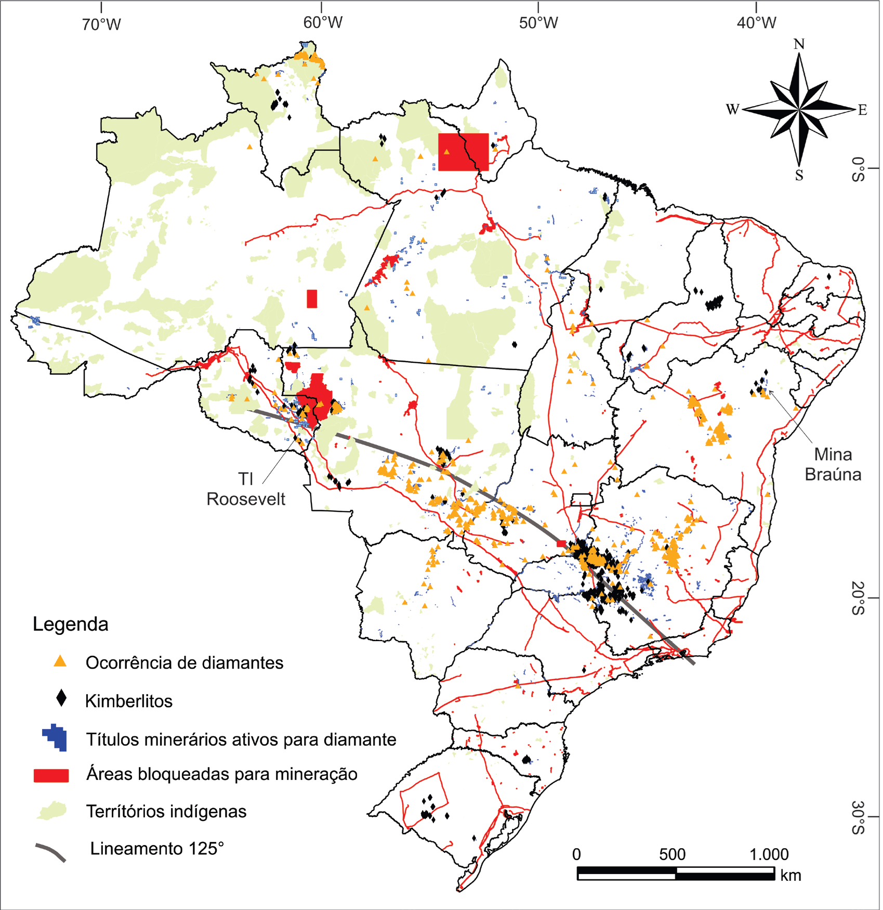

Aspectos econômicos de certificações em diamantes: 20 anos da Certificação Kimberley no Brasil

Resumo em Português
A Certificação Kimberley (CPK) é um instrumento internacional que atesta a origem dos diamantes naturais, buscando coibir seu comércio quando proveniente de áreas de conflitos e regulamentar seu mercado internacional. Instituído pela ONU em 2002, o CPK agrega atualmente 82 países signatários, responsáveis por 99,8% da produção global. O Brasil aderiu ao CPK em 2003 e, embora inexpressivo na produção mundial de diamantes, destaca-se como um dos países membros mais singulares, tanto pelo estilo de seus depósitos — em sua maioria secundários — quanto pela estruturação de sua cadeia e estrutura de produção, que influenciam diretamente a dinâmica de seu mercado, as certificações nacionais e os propósitos do CPK no país.Este trabalho apresenta as idiossincrasias brasileiras em relação a seus pares no CPK e analisa a cadeia de produção nacional tanto em períodos antecessores quanto posteriores ao ingresso do país no Processo Kimberley, contribuindo para uma compreensão mais ampla dos desafios e particularidades da certificação de diamantes no contexto brasileiro.